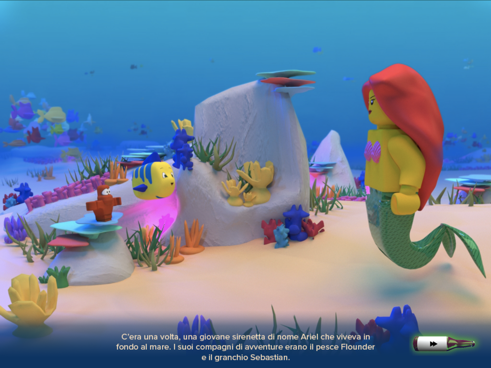
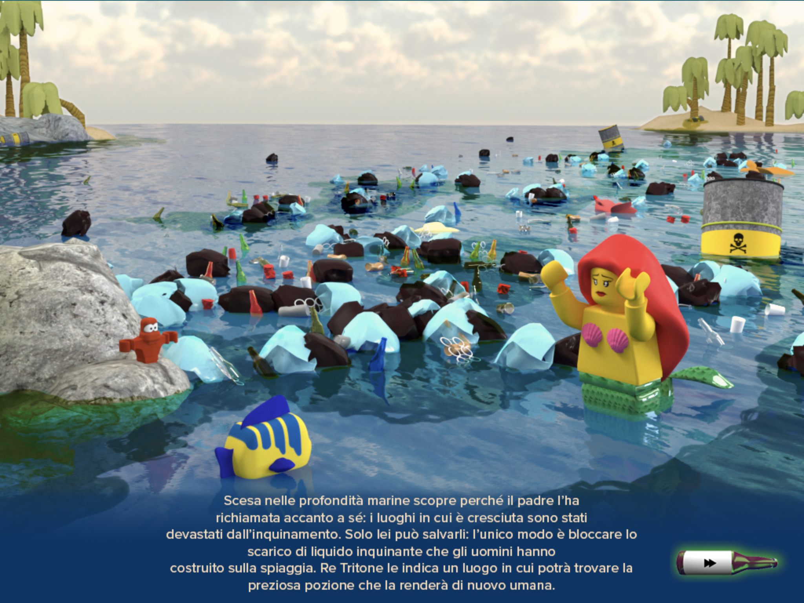
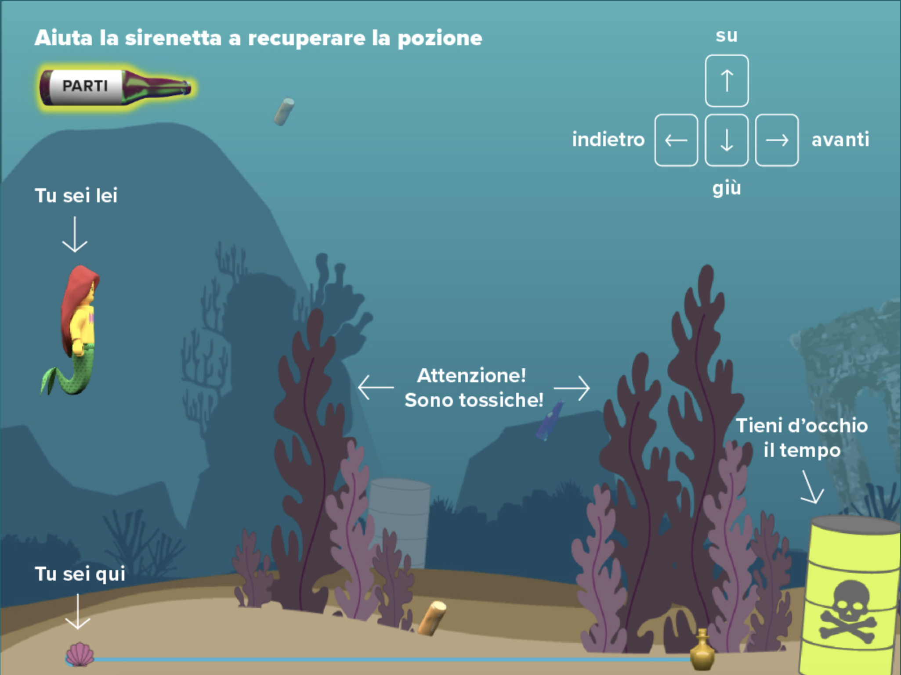
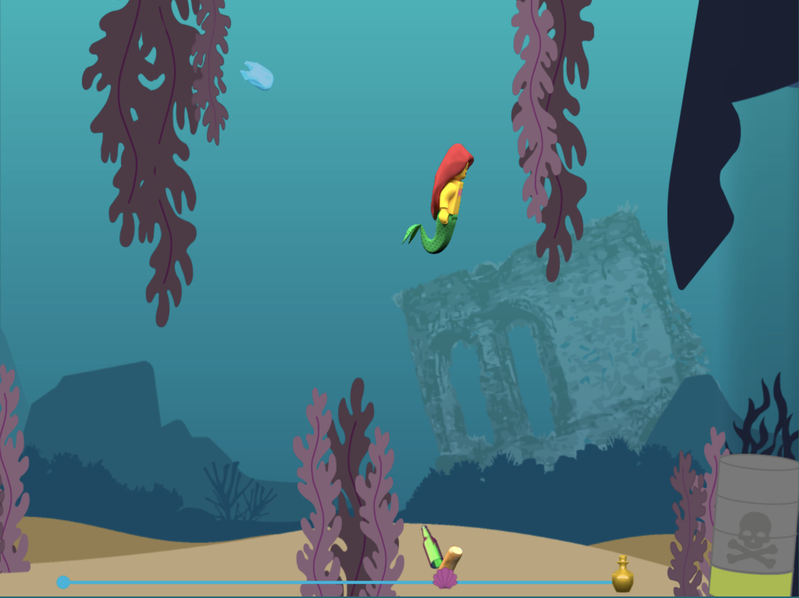
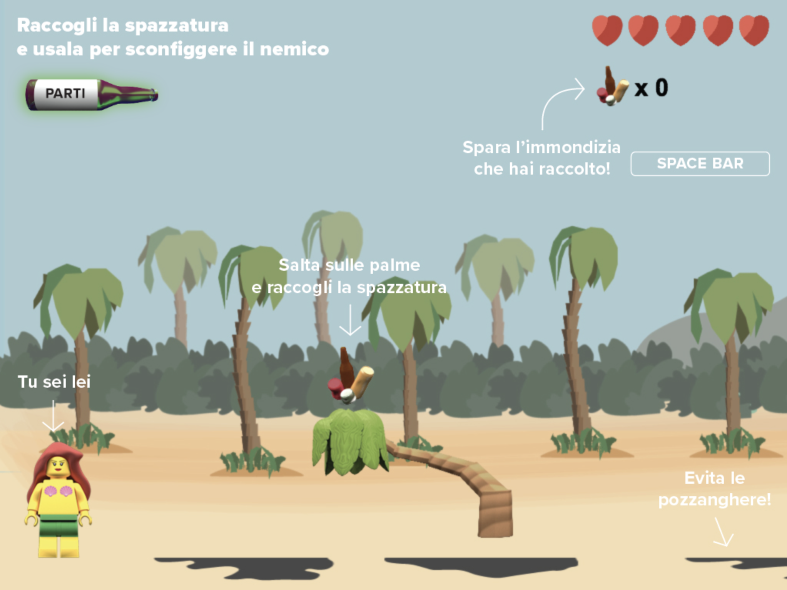
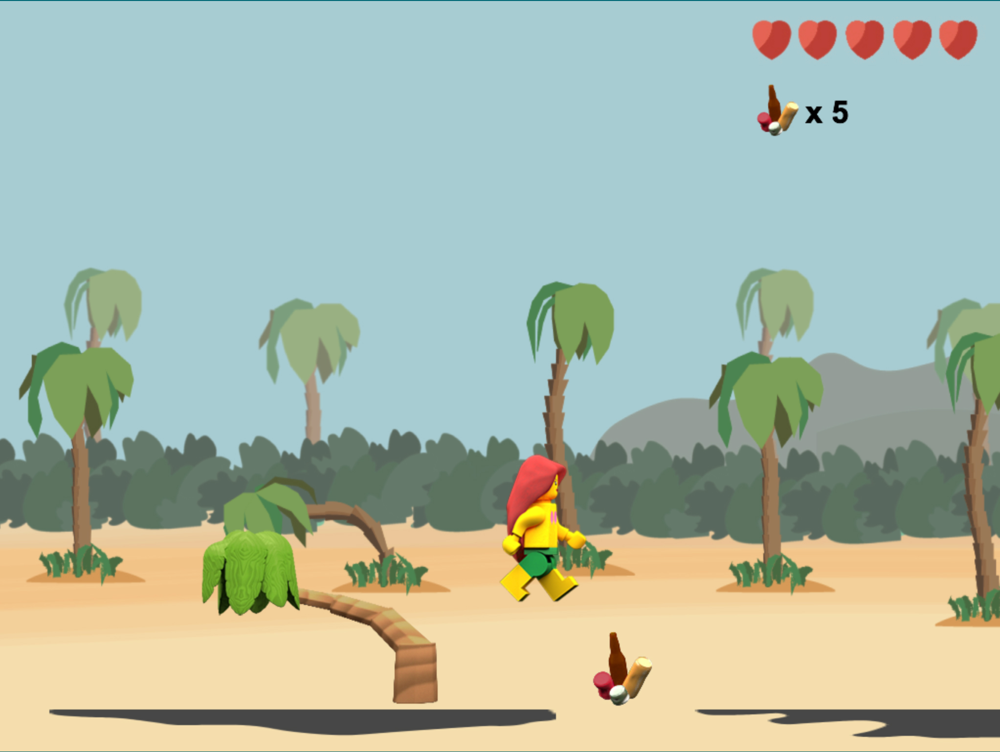

Home page del videogioco La Sirenetta...10 anni dopo
 Due momenti narrativi parte del videogioco La Sirenetta...10 anni dopo
 Primo livello del videogioco La Sirenetta...10 anni dopo
 Secondo livello del videogioco La Sirenetta...10 anni dopo
La Sirenetta...10 anni dopo
Il laboratorio era volto alla progettazione di una piattaforma interattiva con cui raccontare l’evoluzione di una fiaba dieci anni dopo la sua conclusione.
È stata scelta la storia della Sirenetta e ne è stata sfruttata l’ambientazione per sensibilizzare i giocatori sul tema dell’inquinamento degli oceani.
La struttura vede delle sezioni narrative, realizzate tramite rendering 3D, che guidano il giocatore verso due livelli di gioco, con ambientazioni e meccanismi diversi.
Laboratorio di Computer Grafica
Proff. M. Bertolo, F. Bruschi, L. Micoli, V. Rana
A.A. 2018/2019
Progetto di:
Marta Sironi, Matilde Balestri, Sara Davì, Sara Bellini, Matteo Balestrini, Jolanta Kopelian, Miarana Andriantovoniaina, Patricia Vanz Gibellato